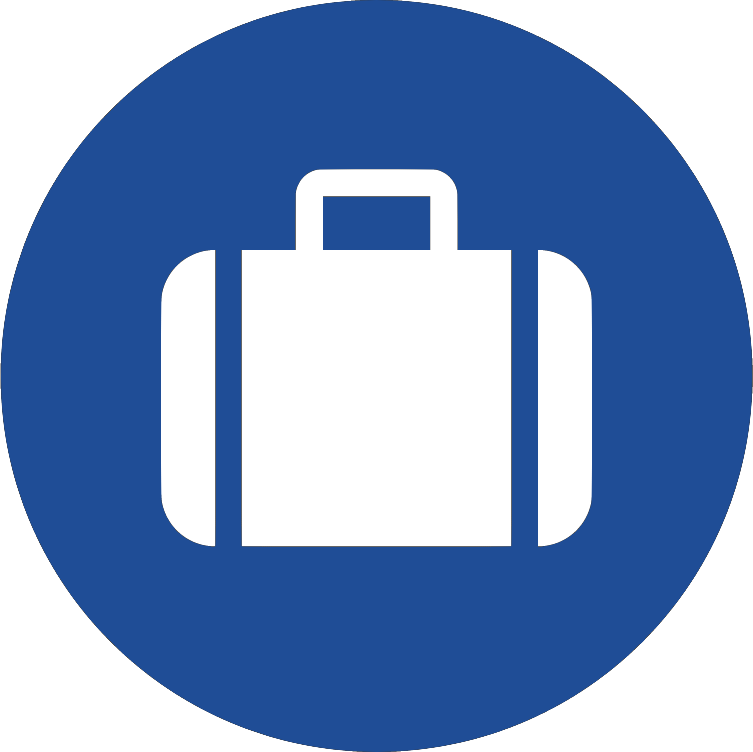
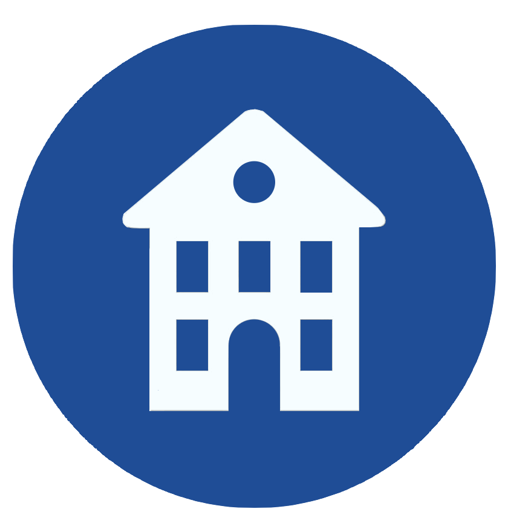

Compassionate, community-based programs serving Maple Ridge and the Lower Mainland:
the Rapid Recovery Response program provides on call referall services to individuals in need of housing, support while transitioning into treatment or between regulated facilities; including transport, referall and application assistance;
the care package program includes the making and supply of care packs for the community, wellness checks, sorting and disbursement of community donations, and on-call support; and
NJR meetings are regular hybrid recovery meetings meant to foster non-judgmental support networks for recovering addicts - click the links below for more information.
providing education to practitioners, support workers, volunteers, and the general community:
narcan training
training for volunteers
presentations related to field work, research partnerships.

EMPLOYMENT
Assistance, Opportunity, Training to help community members succeed, wherever they're at in their journey:
Referalls and Resume/application assistance
Work opportunities*
Training and Mentorship
Volunteer opportunities

HOUSING
Support, Referalls services to assist individuals in need of housing:
Referalls
2nd Stage Housing*
Service Connections and Assistance
*program in development or planned for future development
TESTIMONIALS
"i have gone to many different meetings and recovery groups and always felt out of place. Since coming to find out about Non-Judgmental Recovery, I've found that I am surrounded by people doing it there way and I finally fit in. I volunteer myself to help with outreach or whatever else i possibly can to make sure that i always have a meeting where i am accepted for who i am; and that's a person who is clean from my drug of choice with an amazing support network of like minded people." - ML
"I’ve been to almost every fellowship that is available to those in recovery and NJR was the one that I immediately clicked with upon my first time attending one of their meetings. The atmosphere and energy that radiated from the group made me feel welcomed and like I belonged right off the bat. The support and love shown in the room was unlike anything I have ever experienced. The outreach opportunities I have gotten to participate in have all been super awesome experiences and it’s been a treat to know and be a part of the NJR family." - MJ
NJR Impact
community service provided so far:
3410+
Care Packs Delivered
supported by project partners and volunteers
232+
Rapid Recovery Response Activations
2890+
Volunteer Hours
outreach and one-on-one support
clothing pop-up event
lunch packs and donations
care packs
Program Partners
program partners supporting NJR's outreach programs
in 2023 NJR partnered with Sparc BC through the Homelessness Action Grant to provide ride and referrals services to individuals in need - thank you to Sparc BC for supporting our mission and helping our community recover!
Business location
NJR operates out of Maple Ridge, BC
NJR acknowledges that we live, work, learn and play on the unceded traditional territories of the xʷməθkʷəy̓əm (Musqueam), Sḵwx̱wú7mesh Úxwumixw (Squamish), Tsleil-Waututh (Slay-wa-tuth), Katzie (Kate-zee), Quay Quayt (Key-Kite), Kwantlen, and kʷikʷəƛ̓əm (Kwikwetlem) First Nations.
Donations are welcomed in any capacity - please reach out if you would like to contribute to any or all of NJR's programs. Thank you for supporting community-based programming!